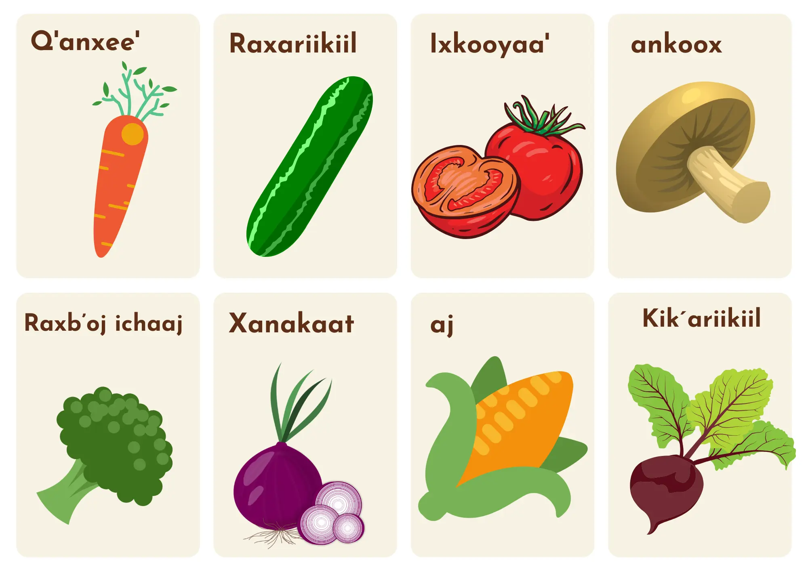
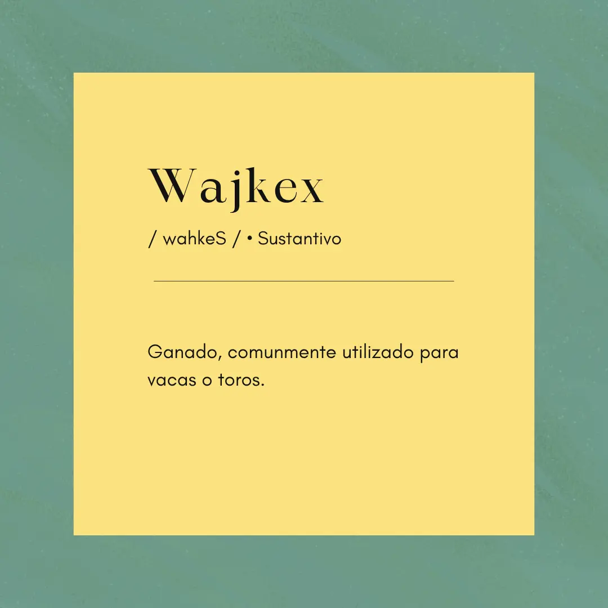
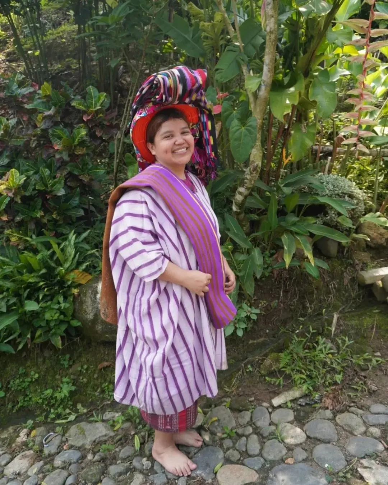

El Tz'utujil es un idioma maya en riesgo — menos de 100,000 hablantes activos. Cada palabra que aprendemos es un acto de preservación.
Materiales didácticos
Tienda
Recursos de aprendizaje
Aprende Tz'utujil
Gramática
Conoce cómo funciona el idioma: verbos, estructura, pronombres, consonantes glotalizadas y más.
Explorar →
Vocabulario
Descubre palabras organizadas por temas: familia, comida, naturaleza y el Lago Atitlán.
Explorar →
Hojas de trabajo
Descarga recursos imprimibles para estudiar o enseñar en clase. Perfectos para maestros.
Explorar →Preservación lingüística
¿Por qué importa preservar el Tz'utujil?
Cuando un idioma desaparece, no solo se pierden palabras — se pierden cosmovisiones enteras, formas únicas de entender el mundo y la identidad de un pueblo.
Empecé este proyecto en 2021 porque vi cómo, incluso en mi propia familia, el Tz'utujil estaba dejando de hablarse. No podía quedarme de brazos cruzados.
Patrimonio reconocido
El Tz'utujil es reconocido por la Academia de Lenguas Mayas de Guatemala como patrimonio lingüístico.
Identidad intergeneracional
Cada palabra es un lazo entre abuelos y nietos, entre la comunidad y sus raíces en el Lago Atitlán.
Diversidad lingüística global
Cada idioma que se pierde empobrece a toda la humanidad. Preservar el Tz'utujil es una contribución al mundo.
Derechos indígenas
Apoyar la enseñanza del Tz'utujil es apoyar el derecho de los pueblos mayas a prosperar en su propio idioma.
Sobre el proyecto
Sobre el Proyecto
Este sitio nace del amor por el idioma maya Tz'utujil y el deseo de compartirlo con el mundo. Soy de Chicacao, con raíces en Santiago Atitlán y San Pedro La Laguna — de las familias Petzey y Creado.
Desde 2021 me dedico a crear materiales didácticos, facilitar talleres de sociolingüística y apoyar la transcripción del idioma. He colaborado con organizaciones en Estados Unidos en proyectos de documentación del Tz'utujil.
Nuestro objetivo es apoyar a docentes, estudiantes y cualquier persona interesada en aprender y preservar esta lengua viva.
— Martha A. Zelada, hablante nativa

ONGs y Organizaciones
Para organizaciones que trabajan con comunidades mayas
Si tu organización trabaja en preservación lingüística, derechos indígenas o educación bilingüe en el área de Atitlán, puedo ser una aliada estratégica con experiencia verificable.
He colaborado con organizaciones que operan en Estados Unidos en proyectos de transcripción de audio Tz'utujil al español y talleres de sociolingüística para facilitadores de otros idiomas mayas.
Contactar para proyectosTranscripción Tz'utujil → Español
Transcripción de audio y video para proyectos de documentación y archivo lingüístico.
Facilitación Sociolingüística
Talleres para facilitadores de otros idiomas mayas en reconocimiento y estandarización.
Materiales para Programas
Desarrollo de materiales didácticos para programas de educación bilingüe intercultural.
Hablante Nativa Verificable
Origen familiar en Santiago Atitlán y San Pedro La Laguna — comunidades tz'utujiles de referencia.
Comunidad activa
Síguenos en Facebook
En nuestra fanpage publicamos vocabulario, historia y contenido cultural del Tz'utujil varias veces por semana. La forma más fácil de aprender algo nuevo cada día.


Palabra del día: Ya' = Agua en Tz'utujil. El nombre del Lago Atitlán es Chiya' — "orilla del agua". Cada palabra lleva nuestra historia. 💧 #Tzutujil #IdiomasMayas
Contáctanos
¿Tienes preguntas o quieres colaborar?
Ya seas maestro, organización, investigador o alguien que simplemente quiere aprender — me encantaría escucharte.

Información de contacto
Ubicación: Guatemala, Guatemala
Horario: Lunes a Viernes, 9am – 5pm
WhatsApp: +502 4472-5900
Web: idiomatzutujil.site
Enviar mensaje por WhatsApp